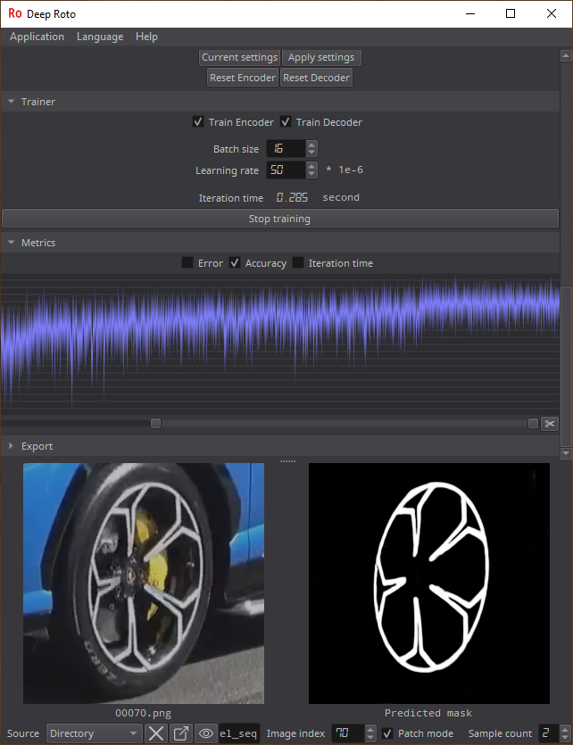

Installation Download install-DeepXTools-NVIDIA.bat Place it to the root of any disk. For example C:\ Run file. After installation finishes you will see C:\DeepXTools directory.
Deep Roto  Mask training tool. You annotate only a few images. Train the neural network. Get a predicted mask for all images.